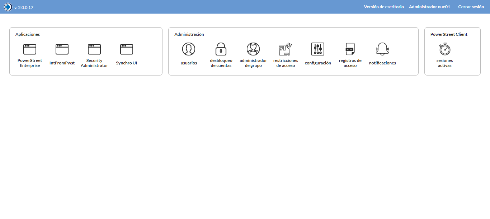
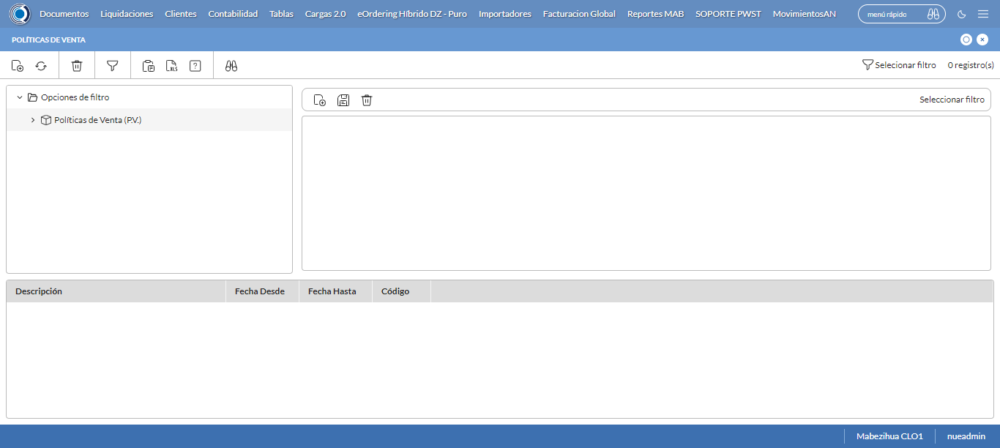
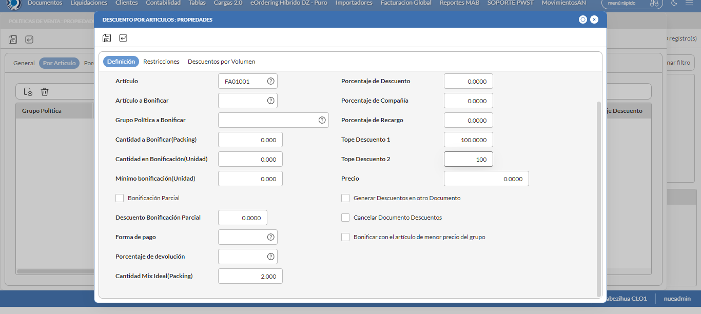
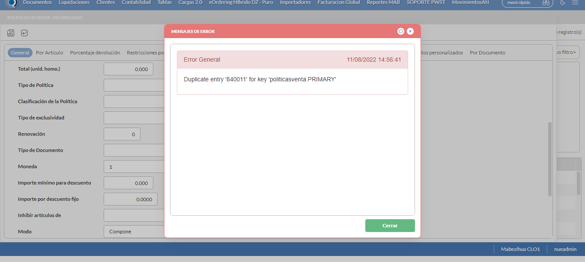
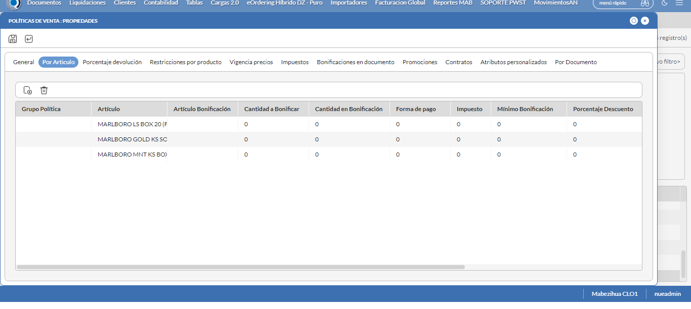

Desarrollado por : Area de Testing PWST
Fecha y hora de inicio : 2022-08-11 12:51:51
Duracion : 0:06:21.339613
Resultado : Total 8，Correctos 5 ，Errores 3 ，Taza de resultado 62.50%
Resumen 62.50% Errores 3 Fallidos 0 Correctos 5 Test realizados 8
| Caso de Prueba | Total | Correctos | Fallido | Error | Detalles | Captura del error |
| PoliticasVenta7.Test: Escenario 1 de Politica Mix Ideal | 8 | 5 | 0 | 3 | Detalles | |
test |
pt1_1: 2022-08-11 12:51:52,940 - root - INFO - Se abre el chrome
2022-08-11 12:51:57,041 - root - INFO - Entra a la URL
2022-08-11 12:51:57,178 - root - INFO - Maximiza la pantalla
2022-08-11 12:52:00,240 - root - INFO - Cambia al frame
|
|
||||
test_000: Ingresa a la base de datos |
pt1_2: 2022-08-11 12:52:03,331 - root - INFO - Escribe el usuario
2022-08-11 12:52:03,436 - root - INFO - Escribe la contraseña
2022-08-11 12:52:03,570 - root - INFO - Se dio clic en el boton ingresar
2022-08-11 12:52:07,163 - root - INFO - Ejecutar Enterprise
2022-08-11 12:52:07,164 - root - INFO - Captura: C:\xampp\htdocs\versiones\automatizaciones\AutoPWST\07PV\report\img screen：20220811_12_52_07.png
2022-08-11 12:52:11,368 - root - INFO - Cambia entre pestañas
|
 | ||||
test_001: Abre menu y ejecuta pantalla |
pt1_3: 2022-08-11 12:52:29,204 - root - INFO - Abre el menu completo
2022-08-11 12:52:44,180 - root - INFO - Abre la pantalla de Politicas de Venta
2022-08-11 12:52:44,258 - root - INFO - La pantalla ejecutada es Politicas de Venta
2022-08-11 12:52:47,271 - root - INFO - Captura: C:\xampp\htdocs\versiones\automatizaciones\AutoPWST\07PV\report\img screen：20220811_12_52_47.png
2022-08-11 12:52:47,511 - root - INFO - Se presiona el boton 'Nuevo', para crear un nuevo registro.
|
 | ||||
test_002: Abre la ventana de nuevo y crear un registro |
pt1_4: 2022-08-11 12:52:52,594 - root - INFO - Se abrio la pantalla para el ingreso de un registro nuevo.
2022-08-11 12:52:52,633 - root - INFO - El campo 'Codigo' si se encuentra visible.
2022-08-11 12:52:52,675 - root - INFO - El campo 'Codigo Alternativo' si se encuentra visible.
2022-08-11 12:52:52,725 - root - INFO - El campo 'Descrición' si se encuentra visible.
2022-08-11 12:52:52,774 - root - INFO - El campo 'Fecha Desde' si se encuentra visible.
2022-08-11 12:52:52,819 - root - INFO - El campo 'Fecha Hasta' si se encuentra visible.
2022-08-11 12:52:52,858 - root - INFO - El campo 'Moneda' si se encuentra visible.
2022-08-11 12:52:52,897 - root - INFO - El campo 'Aplicable en' si se encuentra visible.
2022-08-11 12:52:52,937 - root - INFO - El campo 'Activa' si se encuentra visible.
2022-08-11 12:52:52,978 - root - INFO - El campo 'Aplicación Global' si se encuentra visible.
2022-08-11 12:52:53,103 - root - INFO - Ingresa el codigo del nuevo registro
2022-08-11 12:52:56,263 - root - INFO - Ingresa el codigo alternativo del nuevo registro
2022-08-11 12:52:59,490 - root - INFO - Ingresa la descripción del nuevo registro
2022-08-11 12:53:11,280 - root - INFO - Ingresa la Fecha hasta del nuevo registro
2022-08-11 12:53:52,391 - root - INFO - Se hace el cambio de pestaña para continuar con el registro nuevo
2022-08-11 12:53:55,523 - root - INFO - Se presiona el boton 'Nuevo', para crear un nuevo registro.
2022-08-11 12:54:00,608 - root - INFO - El campo 'Artículo' si se encuentra visible.
2022-08-11 12:54:00,655 - root - INFO - El campo 'Cantidad Mix Ideal(Packing)' si se encuentra visible.
2022-08-11 12:54:00,695 - root - INFO - El campo 'Tope Descuento 1' si se encuentra visible.
2022-08-11 12:54:00,738 - root - INFO - El campo 'Tope Descuento 2' si se encuentra visible.
2022-08-11 12:54:00,911 - root - INFO - Ingresa el Articulo del nuevo registro
2022-08-11 12:54:11,089 - root - INFO - Ingresa la Cantidad de Mix Ideal del nuevo registro
2022-08-11 12:54:14,247 - root - INFO - Ingresa el Tope Descuento 1 del nuevo registro
2022-08-11 12:54:17,435 - root - INFO - Ingresa el Tope Descuento 2 del nuevo registro
2022-08-11 12:54:20,438 - root - INFO - Captura: C:\xampp\htdocs\versiones\automatizaciones\AutoPWST\07PV\report\img screen：20220811_12_54_20.png
2022-08-11 12:54:20,728 - root - INFO - Se presiona el boton 'Guardar', para guardar el registro.
2022-08-11 12:54:25,931 - root - INFO - Se presiona el boton 'Nuevo', para crear un nuevo registro.
2022-08-11 12:54:31,205 - root - INFO - Ingresa el Articulo del nuevo registro
2022-08-11 12:54:41,378 - root - INFO - Ingresa la Cantidad de Mix Ideal del nuevo registro
2022-08-11 12:54:44,568 - root - INFO - Ingresa el Tope Descuento 1 del nuevo registro
2022-08-11 12:54:47,722 - root - INFO - Ingresa el Tope Descuento 2 del nuevo registro
2022-08-11 12:54:50,883 - root - INFO - Se presiona el boton 'Guardar', para guardar el registro.
2022-08-11 12:54:56,018 - root - INFO - Se presiona el boton 'Nuevo', para crear un nuevo registro.
2022-08-11 12:55:01,299 - root - INFO - Ingresa el Articulo del nuevo registro
2022-08-11 12:55:11,454 - root - INFO - Ingresa la Cantidad de Mix Ideal del nuevo registro
2022-08-11 12:55:14,630 - root - INFO - Ingresa el Tope Descuento 1 del nuevo registro
2022-08-11 12:55:17,784 - root - INFO - Ingresa el Tope Descuento 2 del nuevo registro
2022-08-11 12:55:20,966 - root - INFO - Se presiona el boton 'Guardar', para guardar el registro.
2022-08-11 12:55:26,098 - root - INFO - Se da clic en el boton Guardar; se debe crear un nuevo registro.
|
 | ||||
test_003: Repetir el registro creado anteriormente |
pt1_5: 2022-08-11 12:55:31,254 - root - INFO - Se presiona el boton 'Refrescar', para crear un nuevo registro igual al anterior.
2022-08-11 12:55:36,403 - root - INFO - Se presiona el boton 'Nuevo', para crear un nuevo registro igual al anterior.
2022-08-11 12:55:41,500 - root - INFO - Se abrio la pantalla para el ingreso de un registro nuevo.
2022-08-11 12:55:41,565 - root - INFO - El campo 'Codigo' si se encuentra visible.
2022-08-11 12:55:41,607 - root - INFO - El campo 'Codigo Alternativo' si se encuentra visible.
2022-08-11 12:55:41,646 - root - INFO - El campo 'Descrición' si se encuentra visible.
2022-08-11 12:55:41,684 - root - INFO - El campo 'Fecha Desde' si se encuentra visible.
2022-08-11 12:55:41,722 - root - INFO - El campo 'Fecha Hasta' si se encuentra visible.
2022-08-11 12:55:41,763 - root - INFO - El campo 'Moneda' si se encuentra visible.
2022-08-11 12:55:41,803 - root - INFO - El campo 'Aplicable en' si se encuentra visible.
2022-08-11 12:55:41,843 - root - INFO - El campo 'Activa' si se encuentra visible.
2022-08-11 12:55:41,882 - root - INFO - El campo 'Aplicación Global' si se encuentra visible.
2022-08-11 12:55:41,996 - root - INFO - Ingresa el codigo del nuevo registro
2022-08-11 12:55:45,189 - root - INFO - Ingresa el codigo alternativo del nuevo registro
2022-08-11 12:55:48,396 - root - INFO - Ingresa la descripción del nuevo registro
2022-08-11 12:56:00,171 - root - INFO - Ingresa la Fecha hasta del nuevo registro
2022-08-11 12:56:41,188 - root - INFO - Se da clic en el boton Guardar; se debe crear un nuevo registro.
2022-08-11 12:56:46,199 - root - INFO - Captura: C:\xampp\htdocs\versiones\automatizaciones\AutoPWST\07PV\report\img screen：20220811_12_56_46.png
2022-08-11 12:56:46,499 - root - INFO - Se presiona el boton 'Cerrar', para cerrar el mensaje de duplicidad de llave primaria
2022-08-11 12:56:49,689 - root - INFO - Se presiona el boton 'Cerrar', para cerrar la ventana
|
 | ||||
test_004: Modificar el registro |
ft1_6: 2022-08-11 12:56:53,800 - root - INFO - Se presiona el boton 'Refrescar', para crear un nuevo registro igual al anterior.
2022-08-11 12:57:03,467 - root - INFO - Se da clic en el registro creado, para proceder a modificarlo.
2022-08-11 12:57:08,785 - root - INFO - Se modifica el contenido del campo Codigo Alternativo
2022-08-11 12:57:12,062 - root - INFO - Se modifica el contenido del campo Descripcion
2022-08-11 12:57:23,828 - root - INFO - Ingresa la Fecha hasta del nuevo registro
2022-08-11 12:58:04,969 - root - INFO - Se hace el cambio de pestaña para continuar con el registro nuevo
Traceback (most recent call last):
File "C:\xampp\htdocs\versiones\automatizaciones\AutoPWST\07PV\testCase\PoliticasVenta7.py", line 53, in test_004
return modificarregistro.modificarregistro(self)
File "C:\xampp\htdocs\versiones\automatizaciones\AutoPWST\07PV\testCase\modificarregistro.py", line 286, in modificarregistro
Registroporarticulo = self.driver.find_element(By.XPATH, "//span[text()='MARLBORO LS BOX 20 (FA01001)']")
File "C:\Users\PWST\Desktop\Automatización\AutoPWST-2.0\AutoPWST-2.0\venv\lib\site-packages\selenium\webdriver\remote\webdriver.py", line 857, in find_element
return self.execute(Command.FIND_ELEMENT, {
File "C:\Users\PWST\Desktop\Automatización\AutoPWST-2.0\AutoPWST-2.0\venv\lib\site-packages\selenium\webdriver\remote\webdriver.py", line 435, in execute
self.error_handler.check_response(response)
File "C:\Users\PWST\Desktop\Automatización\AutoPWST-2.0\AutoPWST-2.0\venv\lib\site-packages\selenium\webdriver\remote\errorhandler.py", line 247, in check_response
raise exception_class(message, screen, stacktrace)
selenium.common.exceptions.NoSuchElementException: Message: no such element: Unable to locate element: {"method":"xpath","selector":"//span[text()='MARLBORO LS BOX 20 (FA01001)']"}
(Session info: chrome=104.0.5112.81)
Stacktrace:
Backtrace:
Ordinal0 [0x00826463+2188387]
Ordinal0 [0x007BE461+1762401]
Ordinal0 [0x006D3D78+802168]
Ordinal0 [0x00701880+989312]
Ordinal0 [0x00701B1B+989979]
Ordinal0 [0x0072E912+1173778]
Ordinal0 [0x0071C824+1099812]
Ordinal0 [0x0072CC22+1166370]
Ordinal0 [0x0071C5F6+1099254]
Ordinal0 [0x006F6BE0+945120]
Ordinal0 [0x006F7AD6+948950]
GetHandleVerifier [0x00AC71F2+2712546]
GetHandleVerifier [0x00AB886D+2652765]
GetHandleVerifier [0x008B002A+520730]
GetHandleVerifier [0x008AEE06+516086]
Ordinal0 [0x007C468B+1787531]
Ordinal0 [0x007C8E88+1805960]
Ordinal0 [0x007C8F75+1806197]
Ordinal0 [0x007D1DF1+1842673]
BaseThreadInitThunk [0x7781FA29+25]
RtlGetAppContainerNamedObjectPath [0x77D97A7E+286]
RtlGetAppContainerNamedObjectPath [0x77D97A4E+238]
|
|
||||
test_005: Eliminar el registro creado |
ft1_7: 2022-08-11 12:58:09,112 - root - ERROR - No se encontró el botón Refrescar, revise si el xpath sigue siendo el mismo, para mas detalles del error consulte el reporte
2022-08-11 12:58:12,115 - root - INFO - Captura: C:\xampp\htdocs\versiones\automatizaciones\AutoPWST\07PV\report\img screen：20220811_12_58_12.png
Traceback (most recent call last):
File "C:\xampp\htdocs\versiones\automatizaciones\AutoPWST\07PV\testCase\PoliticasVenta7.py", line 57, in test_005
return eliminarregistro.eliminarregistro(self)
File "C:\xampp\htdocs\versiones\automatizaciones\AutoPWST\07PV\testCase\eliminarregistro.py", line 22, in eliminarregistro
Refresca3.click()
File "C:\Users\PWST\Desktop\Automatización\AutoPWST-2.0\AutoPWST-2.0\venv\lib\site-packages\selenium\webdriver\remote\webelement.py", line 88, in click
self._execute(Command.CLICK_ELEMENT)
File "C:\Users\PWST\Desktop\Automatización\AutoPWST-2.0\AutoPWST-2.0\venv\lib\site-packages\selenium\webdriver\remote\webelement.py", line 396, in _execute
return self._parent.execute(command, params)
File "C:\Users\PWST\Desktop\Automatización\AutoPWST-2.0\AutoPWST-2.0\venv\lib\site-packages\selenium\webdriver\remote\webdriver.py", line 435, in execute
self.error_handler.check_response(response)
File "C:\Users\PWST\Desktop\Automatización\AutoPWST-2.0\AutoPWST-2.0\venv\lib\site-packages\selenium\webdriver\remote\errorhandler.py", line 247, in check_response
raise exception_class(message, screen, stacktrace)
selenium.common.exceptions.ElementClickInterceptedException: Message: element click intercepted: Element <div tabindex="12" id="_A340EC18DF7E4BB0AC558B78934907C7__refresh_element" name="_A340EC18DF7E4BB0AC558B78934907C7__refresh_element">...</div> is not clickable at point (56, 74). Other element would receive the click: <svg class="icon-size-small">...</svg>
(Session info: chrome=104.0.5112.81)
Stacktrace:
Backtrace:
Ordinal0 [0x00826463+2188387]
Ordinal0 [0x007BE461+1762401]
Ordinal0 [0x006D3D78+802168]
Ordinal0 [0x00707F9B+1015707]
Ordinal0 [0x00705F68+1007464]
Ordinal0 [0x00703C6B+998507]
Ordinal0 [0x007029D9+993753]
Ordinal0 [0x006F8613+951827]
Ordinal0 [0x0071C7DC+1099740]
Ordinal0 [0x006F7FF4+950260]
Ordinal0 [0x0071C9F4+1100276]
Ordinal0 [0x0072CC22+1166370]
Ordinal0 [0x0071C5F6+1099254]
Ordinal0 [0x006F6BE0+945120]
Ordinal0 [0x006F7AD6+948950]
GetHandleVerifier [0x00AC71F2+2712546]
GetHandleVerifier [0x00AB886D+2652765]
GetHandleVerifier [0x008B002A+520730]
GetHandleVerifier [0x008AEE06+516086]
Ordinal0 [0x007C468B+1787531]
Ordinal0 [0x007C8E88+1805960]
Ordinal0 [0x007C8F75+1806197]
Ordinal0 [0x007D1DF1+1842673]
BaseThreadInitThunk [0x7781FA29+25]
RtlGetAppContainerNamedObjectPath [0x77D97A7E+286]
RtlGetAppContainerNamedObjectPath [0x77D97A4E+238]
|
 | ||||
test_006: Cerrar_Navegador |
ft1_8: Traceback (most recent call last):
File "C:\xampp\htdocs\versiones\automatizaciones\AutoPWST\07PV\testCase\PoliticasVenta7.py", line 61, in test_006
self.driver.close()
File "C:\Users\PWST\Desktop\Automatización\AutoPWST-2.0\AutoPWST-2.0\venv\lib\site-packages\selenium\webdriver\remote\webdriver.py", line 552, in close
self.execute(Command.CLOSE)
File "C:\Users\PWST\Desktop\Automatización\AutoPWST-2.0\AutoPWST-2.0\venv\lib\site-packages\selenium\webdriver\remote\webdriver.py", line 435, in execute
self.error_handler.check_response(response)
File "C:\Users\PWST\Desktop\Automatización\AutoPWST-2.0\AutoPWST-2.0\venv\lib\site-packages\selenium\webdriver\remote\errorhandler.py", line 247, in check_response
raise exception_class(message, screen, stacktrace)
selenium.common.exceptions.InvalidSessionIdException: Message: invalid session id
Stacktrace:
Backtrace:
Ordinal0 [0x00826463+2188387]
Ordinal0 [0x007BE461+1762401]
Ordinal0 [0x006D3C40+801856]
Ordinal0 [0x006F68BD+944317]
Ordinal0 [0x006F7AD6+948950]
GetHandleVerifier [0x00AC71F2+2712546]
GetHandleVerifier [0x00AB886D+2652765]
GetHandleVerifier [0x008B002A+520730]
GetHandleVerifier [0x008AEE06+516086]
Ordinal0 [0x007C468B+1787531]
Ordinal0 [0x007C8E88+1805960]
Ordinal0 [0x007C8F75+1806197]
Ordinal0 [0x007D1DF1+1842673]
BaseThreadInitThunk [0x7781FA29+25]
RtlGetAppContainerNamedObjectPath [0x77D97A7E+286]
RtlGetAppContainerNamedObjectPath [0x77D97A4E+238]
|
|
||||
| Caso de prueba | 8 | 5 | 0 | 3 | Taza de resultado：62.50% | |